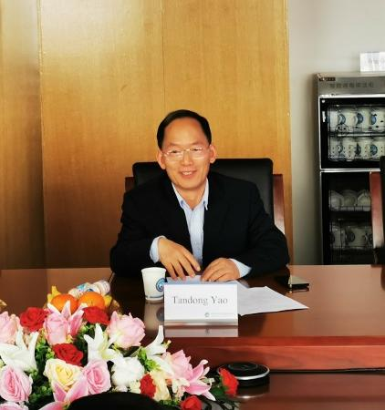
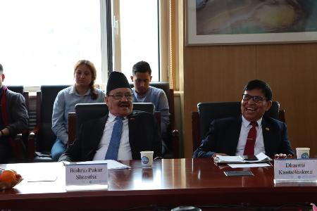
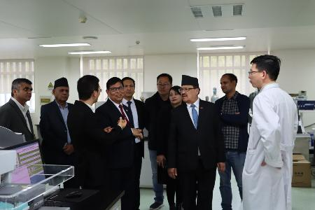
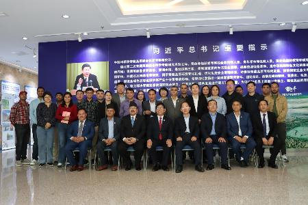

4月17日，尼泊尔特里布文大学常务副校长Dharma
Kanta Baskota教授和尼泊尔驻华大使Bishnu
Pukar Shrestha率代表团一行访问了中国科学院青藏高原研究所，交流会由中国科学院加德满都科教中心主任姚檀栋院士主持。
庄绪亮书记代表青藏高原所对常务副校长和大使先生一行表示热烈欢迎，向来宾简要介绍了研究所的组织架构、科研创新和国际合作情况，并就尼方长期以来支持加德满都科教中心各项工作表示感谢。
特里布文大学国际关系学院院长Binod Joshi介绍了特里布文大学情况，所务委员张凡研究员介绍了研究所和第三极环境（TPE）国际计划的基本情况；加德满都科教中心执行主任汪涛研究员介绍了中心近年来取得的成绩及未来工作计划。代表团参观了青藏高原地球系统与资源环境重点实验室并听取了科研人员在尼泊尔开展的冰湖溃决研究与预警、冰川生态系统微生物研究、中尼经济走廊绿色发展和第三极地区冰冻圈最近的气候变化相关学术报告。
Dharma Kanta
Baskota教授高度赞扬了青藏高原所的科研实力和国际影响力，感谢加德满都科教中心在科学研究和人才培养等方面对特里布文大学的支持帮助。他表示，特里布文大学将一如既往地全力保障加德满都科教中心在尼泊尔各项工作的顺利开展。他强调，双方可进一步深化合作，共同应对全球气候变化挑战。
Bishnu Pukar
Shrestha大使表示对中尼科教合作充满信心，尼泊尔驻华使馆将大力支持特里布文大学与青藏高原所的国际合作事业。
姚檀栋院士在总结发言中表示，随着国际合作全面恢复和加强，特里布文大学、尼泊尔驻华使馆及合作伙伴的大力支持，以及加德满都科教中心各项设施全面落成，中心将在人才培养、服务中尼社会发展和推动跨喜马拉雅命运共同体建设等方面贡献科技力量。

中国科学院加德满都科教中心主任姚檀栋院士主持会议

特里布文大学常务副校长Dharma Kanta Baskota教授和尼泊尔驻华大使Bishnu Pukar Shrestha出席会议并讲话

代表团参观实验室

合影